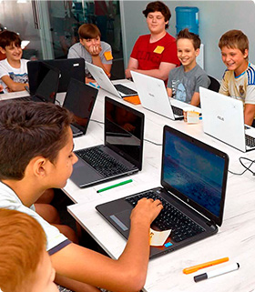

<section class="education">
  <div class="container">
    <p class="education__about-part-1">
      За останні 5 років кількість дітей, які вміють користуватися комп'ютером,
      збільшилася приблизно в 10 разів.
    </p>
    <p class="education__about-part-2">
      Як зазначає більшість дослідників, ці тенденції будуть прискорюватися
      незалежно від шкільної освіти.
    </p>
    
  </div>
</section>
